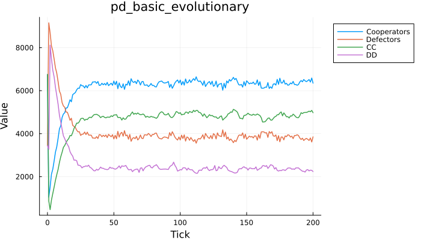
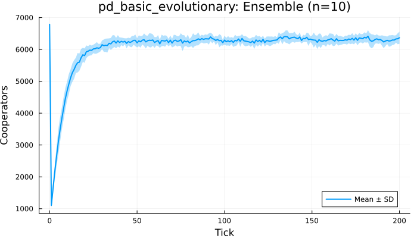
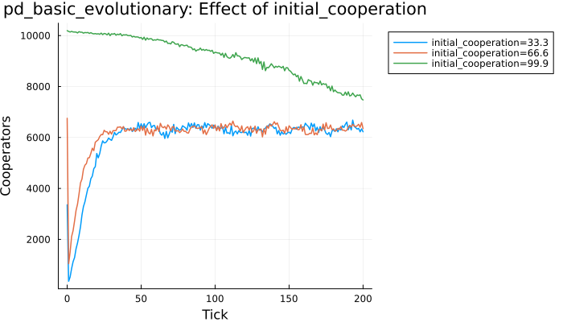

PD Basic Evolutionary
Overview
WHAT IS IT?
One of the most prominently studied phenomena in Game Theory is the “Prisoner’s Dilemma.” The Prisoner’s Dilemma, which was formulated by Melvin Drescher and Merrill Flood and named by Albert W. Tucker, is an example of a class of games called non-zero-sum games.
In zero-sum games, total benefit to all players add up to zero, or in other words, each player can only benefit at the expense of other players (e.g. chess, football, poker — one person can only win when the opponent loses). On the other hand, in non-zero-games, each person’s benefit does not necessarily come at the expense of someone else. In many non-zero-sum situations, a person can benefit only when others benefit as well. Non-zero-sum situations exist where the supply of a resource is not fixed or limited in any way (e.g. knowledge, artwork, and trade). Prisoner’s Dilemma, as a non-zero-sum game, demonstrates a conflict between rational individual behavior and the benefits of cooperation in certain situations. The classical prisoner’s dilemma is as follows:
Two suspects are apprehended by the police. The police do have enough evidence to convict these two suspects. As a result, they separate the two, visit each of them, and offer both the same deal: “If you confess, and your accomplice remains silent, he goes to jail for 10 years and you can go free. If you both remain silent, only minor charges can be brought upon both of you and you guys get 6 months each. If you both confess, then each of you two gets 5 years.”
Each suspect may reason as follows: “Either my partner confesses or not. If he does confess and I remain silent, I get 10 years while if I confess, I get 5 years. So, if my partner confesses, it is best that I confess and get only 5 years than 10 years in prison. If he didn’t, then by confessing, I go free, whereby remaining silent, I get 6 months. Thus, if he didn’t confess, it is best to confess, so that I can go free. Whether or not my partner confesses or not, it is best that I confess.”
In a non-iterated prisoner’s dilemma, the two partners will never have to work together again. Both partners are thinking in the above manner and decide to confess. Consequently, they both receive 5 years in prison. If neither would have confessed, they would have only gotten 6 months each. The rational behavior paradoxically leads to a socially unbeneficial outcome.
Payoff MatrixHOW IT WORKS
Each patch will either cooperate (blue) or defect (red) in the initial start of the model. At each cycle, each patch will interact with all of its 8 neighbors to determine the score for the interaction. Should a patch have cooperated, its score will be the number of neighbors that also cooperated. Should a patch defect, then the score for this patch will be the product of the Defection-Award multiple and the number of neighbors that cooperated (i.e. the patch has taken advantage of the patches that cooperated).
In the subsequent round, the patch will set its old-cooperate? to be the strategy it used in the previous round. For the upcoming round, the patch will adopt the strategy of one of its neighbors that scored the highest in the previous round.
If a patch is blue, then the patch cooperated in the previous and current round.
If a patch is red, then the patch defected in the previous iteration as well as the current round.
If a patch is green, then the patch cooperated in the previous round but defected in the current round.
If a patch is yellow, then the patch defected in the previous round but cooperated in the current round.
THINGS TO NOTICE
Notice the effect the Defection-Award multiple plays in determining the number of patches that will completely cooperate (red) or completely defect (blue). At what Defection-Award multiple value will a patch be indifferent to defecting or cooperating? At what Defection-Award multiple value will there be a dynamic change between red, blue, green, and yellow - where in the end of the model no particular color dominates all of the patches (i.e. view is not all red or all blue)?
Note the Initial-Cooperation percentage. Given that Defection-Award multiple is low (below 1), if the initial percentage of cooperating patches is high, will there be more defecting or cooperating patches eventually? How about when the Defection-Award multiple is high? Does the initial percentage of cooperation effect the outcome of the model, and, if so, how?
THINGS TO TRY
Increase the Defection-Award multiple by moving the “Defection-Award” slider (just increase the “Defection-Award” slider while model is running), and observe how the histogram for each color of patch changes. In particular, pay attention to the red and blue bars. Does the number of pure cooperation or defection decrease or increase with the increase of the Defection-Award multiple? How about with a decrease of the Defection-Award multiple? (Just increase the “Defection-Award” slider while model is running.)
At each start of the model, either set the initial-cooperation percentage to be very high or very low (move the slider for “initial-cooperation”), and proportionally value the Defection-Award multiple (move the slider for “Defection-Award” in the same direction) with regards to the initial-cooperation percentage. Which color dominates the world, when the initial-cooperation is high and the Defection-Award is high? Which color dominates the world when initial-cooperation is low and the Defection-Award multiple is also low?
EXTENDING THE MODEL
Alter the code so that the patches have a strategy to implement. For example, instead of adopting to cooperated or defect based on the neighboring patch with the maximum score. Instead, let each patch consider the history of cooperation or defection of it neighboring patches, and allow it to decide whether to cooperate or defect as a result.
Implement these four strategies:
- Cooperate-all-the-time: regardless of neighboring patches’ history, cooperate.
- Tit-for-Tat: only cooperate with neighboring patches, if they have never defected. Otherwise, defect.
- Tit-for-Tat-with-forgiveness: cooperate if on the previous round, the patch cooperated. Otherwise, defect.
- Defect-all-the-time: regardless of neighboring patches’ history, defect.
How are the cooperating and defecting patches distributed? Which strategy results with the highest score on average? On what conditions will this strategy be a poor strategy to use?
HOW TO CITE
If you mention this model in a publication, we ask that you include these citations for the model itself and for the NetLogo software:
- Wilensky, U. (2002). NetLogo PD Basic Evolutionary model. http://ccl.northwestern.edu/netlogo/models/PDBasicEvolutionary. Center for Connected Learning and Computer-Based Modeling, Northwestern Institute on Complex Systems, Northwestern University, Evanston, IL.
- Wilensky, U. (1999). NetLogo. http://ccl.northwestern.edu/netlogo/. Center for Connected Learning and Computer-Based Modeling, Northwestern Institute on Complex Systems, Northwestern University, Evanston, IL.
COPYRIGHT AND LICENSE
Copyright 2002 Uri Wilensky.

This work is licensed under the Creative Commons Attribution-NonCommercial-ShareAlike 3.0 License. To view a copy of this license, visit http://creativecommons.org/licenses/by-nc-sa/3.0/ or send a letter to Creative Commons, 559 Nathan Abbott Way, Stanford, California 94305, USA.
Commercial licenses are also available. To inquire about commercial licenses, please contact Uri Wilensky at uri@northwestern.edu.
This model was created as part of the projects: PARTICIPATORY SIMULATIONS: NETWORK-BASED DESIGN FOR SYSTEMS LEARNING IN CLASSROOMS and/or INTEGRATED SIMULATION AND MODELING ENVIRONMENT. The project gratefully acknowledges the support of the National Science Foundation (REPP & ROLE programs) – grant numbers REC #9814682 and REC-0126227.
Parameters
| Parameter | Type | Default | Description |
|---|---|---|---|
initial_cooperation |
Float64 |
66.6 |
percent of patches that cooperate initially |
defection_award |
Float64 |
1.59 |
multiplier for defectors |
grid_width |
Int |
101 |
-50..50 = 101 patches |
grid_height |
Int |
101 |
grid height |
max_ticks |
Int |
200 |
max ticks |
Source Code
The Julia code to run this model:
using ArkModelZoo
_, trajectory = run_pd_basic_evolutionary()Time Series

Ensemble Runs
Ten replicates with different random seeds, showing mean ± standard deviation.

Parameter Sensitivity
Varying initial_cooperation.

Appendix: Source Code
This model is implemented in the Ark.jl Entity-Component-System (ECS) framework. The code is split into five files, each with a distinct role:
- Parameters: a mutable struct holding all configurable values.
- Components: lightweight data types attached to individual entities (agents).
- Resources: world-level shared state accessible to all systems.
- Systems: functions that operate on entities each tick, defining model behavior.
- Model: wiring that assembles the world, registers resources and systems, and provides the run entry point.
Parameters (parameters.jl)
The parameter struct uses @kwdef so that every field has a default value and can be overridden by keyword. These defaults match the original NetLogo model’s slider settings.
Base.@kwdef mutable struct PDEParams
initial_cooperation::Float64 = 66.6 # percent of patches that cooperate initially
defection_award::Float64 = 1.59 # multiplier for defectors
grid_width::Int = 101 # -50..50 = 101 patches
grid_height::Int = 101
max_ticks::Int = 200
seed::Int = 42
endComponents (components.jl)
Components are lightweight data types attached to individual entities (agents). Mutable structs hold per-entity state, while empty tag structs act as markers for the ECS query system to efficiently filter entities.
# PD Basic Evolutionary is purely patch-based; no ECS agent components needed.Resources (resources.jl)
Resources are world-level singletons shared across all systems, used for global state and aggregate statistics.
mutable struct PDEGrid
width::Int
height::Int
cooperate::Matrix{Bool}
old_cooperate::Matrix{Bool}
score::Matrix{Float64}
end
function PDEGrid(w::Int, h::Int)
PDEGrid(w, h, falses(w, h), falses(w, h), zeros(w, h))
end
mutable struct PDEStats
num_cooperators::Int
num_defectors::Int
num_cc::Int # was C, still C (blue)
num_dd::Int # was D, still D (red)
num_cd::Int # was C, now D (green)
num_dc::Int # was D, now C (yellow)
end
PDEStats() = PDEStats(0, 0, 0, 0, 0, 0)Systems (systems.jl)
Systems contain the model logic and execute in a defined order each tick. Each system struct implements either initialize! (run once at setup) or update! (run every tick).
# --- Initialization ---
struct InitPDESystem <: System end
function initialize!(::InitPDESystem, world::World)
params = get_resource(world, PDEParams)
rng = get_resource(world, RNGResource).rng
grid = get_resource(world, PDEGrid)
w, h = grid.width, grid.height
for x in 1:w, y in 1:h
c = rand(rng) < (params.initial_cooperation / 100.0)
grid.cooperate[x, y] = c
grid.old_cooperate[x, y] = c
end
_pde_update_stats!(world)
return nothing
end
# --- Go: interact + select-strategy ---
struct PDEGoSystem <: System end
function update!(::PDEGoSystem, world::World)
params = get_resource(world, PDEParams)
rng = get_resource(world, RNGResource).rng
grid = get_resource(world, PDEGrid)
w, h = grid.width, grid.height
# interact: compute scores
for x in 1:w, y in 1:h
total_cooperators = moore_neighbor_count(identity, grid.cooperate, x, y, w, h)
if grid.cooperate[x, y]
grid.score[x, y] = Float64(total_cooperators)
else
grid.score[x, y] = params.defection_award * total_cooperators
end
end
# select-strategy: save old, then adopt neighbor's strategy with max score
# NetLogo processes patches in random order with immediate updates
copyto!(grid.old_cooperate, grid.cooperate)
# Random processing order (matching NetLogo's ask patches)
positions = [(x, y) for x in 1:w for y in 1:h]
Random.shuffle!(rng, positions)
for (x, y) in positions
best_score = -Inf
best_candidates = Tuple{Int,Int}[]
for dx in -1:1, dy in -1:1
(dx == 0 && dy == 0) && continue
nx = mod1(x + dx, w)
ny = mod1(y + dy, h)
s = grid.score[nx, ny]
if s > best_score
best_score = s
empty!(best_candidates)
push!(best_candidates, (nx, ny))
elseif s == best_score
push!(best_candidates, (nx, ny))
end
end
# Random tie-breaking (matching NetLogo's max-one-of)
if !isempty(best_candidates)
chosen = best_candidates[rand(rng, 1:length(best_candidates))]
grid.cooperate[x, y] = grid.cooperate[chosen[1], chosen[2]]
end
end
_pde_update_stats!(world)
return nothing
end
function _pde_update_stats!(world::World)
grid = get_resource(world, PDEGrid)
stats = get_resource(world, PDEStats)
w, h = grid.width, grid.height
nc = 0; nd = 0; cc = 0; dd = 0; cd = 0; dc = 0
for x in 1:w, y in 1:h
old_c = grid.old_cooperate[x, y]
new_c = grid.cooperate[x, y]
if new_c
nc += 1
else
nd += 1
end
if old_c && new_c
cc += 1
elseif !old_c && !new_c
dd += 1
elseif old_c && !new_c
cd += 1
else
dc += 1
end
end
stats.num_cooperators = nc
stats.num_defectors = nd
stats.num_cc = cc
stats.num_dd = dd
stats.num_cd = cd
stats.num_dc = dc
return nothing
end
# --- Termination ---
struct PDETerminationSystem <: System end
function update!(::PDETerminationSystem, world::World)
params = get_resource(world, PDEParams)
tick = get_resource(world, Tick)
if tick.tick + 1 >= params.max_ticks
get_resource(world, Terminate).stop = true
end
return nothing
endModel (model.jl)
The model file assembles all pieces: it creates the ECS World with the required component types, registers resources, builds the Scheduler with systems in execution order, and exposes the public run entry point. The observer pattern records the trajectory each tick.
function pde_world(; initial_capacity::Int = 64)
return World(; initial_capacity = initial_capacity, allow_mutable = true)
end
function pde_systems()
return (
InitPDESystem(),
PDEGoSystem(),
PDETerminationSystem(),
)
end
function pde_model(params::PDEParams = PDEParams())
world = pde_world()
_add_standard_resources!(world, params)
add_resource!(world, PDEGrid(params.grid_width, params.grid_height))
add_resource!(world, PDEStats())
scheduler = Scheduler(world, pde_systems())
initialize!(scheduler)
return scheduler
end
struct PDEObserver end
function pde_headers(::PDEObserver)
return ["Cooperators", "Defectors", "CC", "DD"]
end
function pde_values(::PDEObserver, world::World)
stats = get_resource(world, PDEStats)
return Float64[stats.num_cooperators, stats.num_defectors,
stats.num_cc, stats.num_dd]
end
function run_pd_basic_evolutionary(; params::PDEParams = PDEParams(), observe::Bool = true)
return _run_model(pde_model, PDEObserver(), pde_values; params, observe)
end